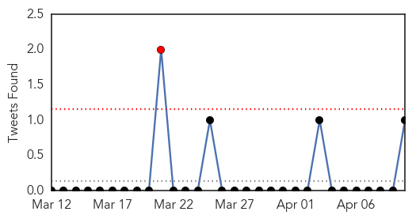
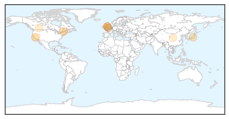
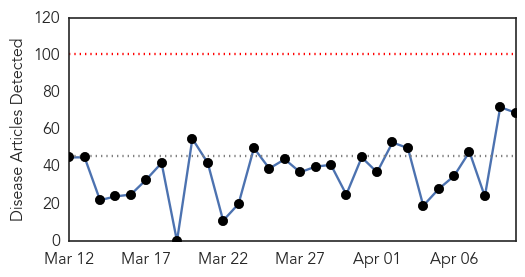
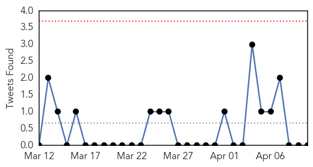
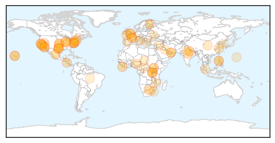

Swine Flu
30-Day Web Trend
0 alerts, 0 warnings

30-Day Twitter Trend
2 alerts, 0 warnings

Article Locations
Article Confidences

Top Articles:
- 0.997
- Humans give sea otters the flu
- 0.994
- Pill to beat flu is a step closer
- 0.869
- Why stockpiling anti-flu drugs may not be a waste of money
- 0.855
- Tamiflu: 'Research is flawed', says manufacturer
- 0.833
- Report suggests billions wasted on ‘ineffective’ Tamiflu drug
- 0.782
- Dallasblog.com, the Dallas, Texas news blog and Dallas, Texas information source for the DFW Metroplex.
- 0.601
- The dangers of homeopathic vaccines
- 0.593
- Why Swine Flu Tamiflu 'Sloppy Science' is the Tip of the 'Bad Pharma' Iceberg
Top Tweets:
- 0.592
- Your study cannot answer that. You looked at seasonal flu trials. Landscape's changed. H1N1 pandemic experience supports NAI
Unknown
30-Day Web Trend
0 alerts, 0 warnings

30-Day Twitter Trend
1 alerts, 0 warnings

Article Locations
Article Confidences

Top Articles:
- 0.992
- Liberia: Ebola virus disease outbreak Emergency Plan of Action (EPoA) Operation n° MDRLR001 - Liberia
- 0.917
- Chicago Tribune
- 0.917
- Chicago Tribune
- 0.917
- Chicago Tribune
- 0.917
- Chicago Tribune
- 0.917
- Chicago Tribune
- 0.917
- Chicago Tribune
- 0.917
- Chicago Tribune
- 0.917
- Chicago Tribune
- 0.917
- Chicago Tribune
- 0.899
- Norovirus suspected in new Princess Cruises outbreak
- 0.866
- Magnitude 6.4 quake strikes near Managua in Nicaragua -USGS
- 0.866
- Obama, Merkel discuss Ukraine in phone call -White House
- 0.866
- Preserved skulls are spread out on a metal shelf in a Catholic church in Nyamata, Rwanda
- 0.847
- Experts decode germs’ DNA to fight food poisoning
- 0.819
- Health chief takes Illinois TB patient to court
- 0.816
- Illinois health official seeks court order against infectious-TB patient
- 0.813
- Health Officials Work to Contain Tuberculosis Outbreak
- 0.793
- Nevada OSHA fines Summerlin Hospital in fatal TB outbreak
- 0.784
- Pink Eye Extends School Closures In American Samoa
- 0.784
- Pink eye extends school closures in American Samoa
- 0.783
- China, Hong Kong report four more H7N9 cases
- 0.778
- Cameroon Polio Vaccination Targets CAR, Nigerian Refugees - Cameroon
- 0.757
- Cornwall superbug C. diff cases double target
- 0.747
- Vaccines alone cannot beat polio in Iraq - Iraq
- 0.743
- Norovirus outbreak on ANOTHER cruise ship as 83 people infected
- 0.729
- Vaccines alone cannot beat polio in Iraq
- 0.722
- GALLERY: Fen factory’s workers screened for TB by Public Health England in ‘proactive’ response to outbreak
- 0.707
- Banke DPHO starts hospital monitoring
- 0.704
- More questions surround water safety
- 0.683
- More than 100 passengers sick on cruise off California
- 0.677
- Middle East Online
- 0.671
- Deadly Pig Virus
- 0.669
- More than 100 passengers sick on cruise off California
- 0.668
- UN accused of 'shameful attitude' in S Sudan
- 0.654
- UN Rejects Aid Agency Criticism of South Sudan Mission
- 0.652
- Queens hospital rejects drug crisis: Ministry of Health says adequate supplies
- 0.617
- Senate gives preliminary approval to Lyme disease legislation
- 0.615
- Diseased bats found in three northern Michigan counties
- 0.606
- State warns of deadly virus' spring return
- 0.603
- Blood suckers and disease carriers - Health
- 0.587
- Borden Tri-County Water testing supply after rains
- 0.574
- Obama speech marks 50 years since Civil Rights Act
- 0.574
- Video: EU Commission candidates Juncker and Schulz debate on FRANCE 24
- 0.574
- Iran, six powers struggle to narrow gaps in nuclear talks
- 0.574
- India’s anti-graft party face make-or-break vote
- 0.574
- Hollande in Mexico to mend strained relations
- 0.574
- Franco-Rwandan wanted for genocide arrested in Rouen
- 0.574
- French are drinking less often than European neighbours
- 0.574
- VIDEO: As Chadian soldiers pull out of CAR, Muslims prepare to flee
Showing top 50 articles...
Top Tweets:
- 0.698
- How The Flu Virus Invades Your Body: https://t.co/ZBWKQUzJzn
- 0.545
- .@thorntonrules Local activity means increased flu-like illness in 1 region. Find a flu surveillance report for AZ: http://t.co/MdXs4rBNoS
- 0.532
- Help stop the spread of germs - If you are sick with the flu, stay home for at least 24 hrs after your fever is gone http://t.co/wxCs1bzwET